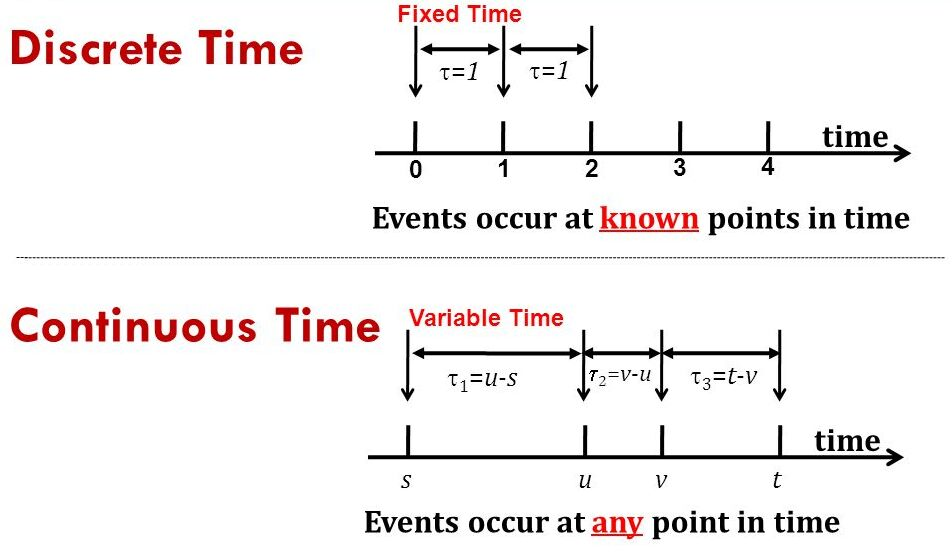
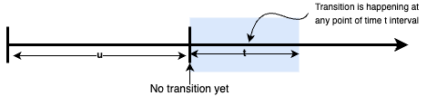
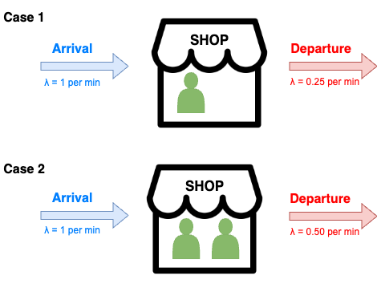
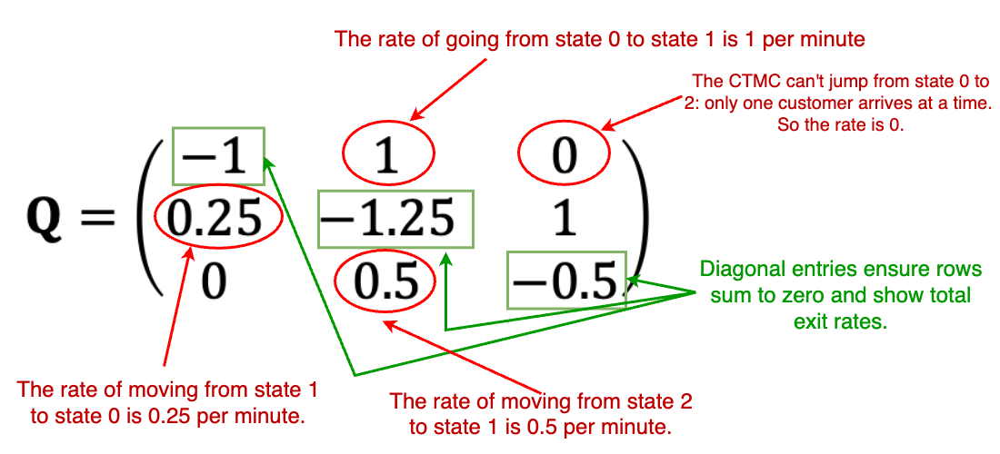
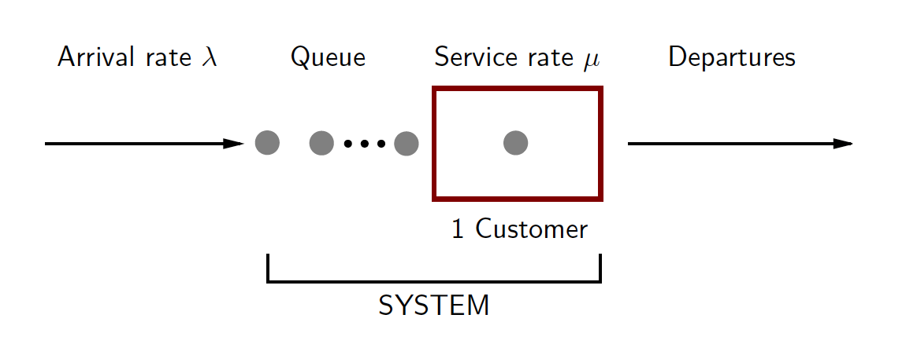

Introduction to Continuous
Markov Chains & Queueing Theory
in Healthcare Supply Chains
Udeshi Salgado
Data Lab for Social Good,
Cardiff University, UK
2025-05-22
Assumptions
- You should be familiar with basic probability and random variables.
- You are expected to be comfortable with R (or Python) for basic simulation and matrix operations.
- This is not a theory-heavy workshop—we will use simple examples to build intuition, not derive theorems.
What We Will Cover
- Key concepts and steady-state analysis of Continuous-Time Markov Chains (CTMCs)
- Modeling a vaccine observation room using CTMCs
- Introduction to Queueing Theory
- Introduction to M/M/1 queueing systems and performance metrics
What We Will Not Cover
- Theoretical proofs (e.g., Chapman-Kolmogorov, Little’s Law)
- Networks of queues
- Multiclass queues and priority scheduling
- Non-stationary arrivals and general service times
- Non-exponential queues
- Time-dependent queueing models
Materials
- You can find the workshop materials at here.
- Note: These materials are based on my learnings at NATCOR Taught Course Centre: Stochastic Modelling Course
Outline
Recap- Continuous Time Markov Chains (CTMC)
- Lab Activity: Part 1 – CTMC (Vaccine Observation Room)
- Queueing Theory
- Lab Activity: Part 2 – Queueing Theory (Check-In Desk)
Recap: Quiz Time!

Recap: Discrete-Time Markov Chain (DTMC) Assumptions
- The system is always in exactly one state at any given time step.
- The next state depends only on the current state, not on the past (Markov property).
- Transitions happen at fixed, regular time steps.
- Transition probabilities stay the same over time.
Recap: State Space and Parameter Space

Recap: Discrete MC Vs Continuous MC
Outline
- Recap
Continuous Time Markov Chains- Lab Activity: Part 1 – CTMC (Vaccine Observation Room)
- Queueing Theory
- Lab Activity: Part 2 – Queueing Theory (Check-In Desk)
Continuous Time Markov Chains (CTMC)
- In a continuous-time Markov chain (CTMC), the system state can change at any point on the continuous time axis.
Exponential Timing in CTMCs
- Assumption: In a Continuous-Time Markov Chain (CTMC), the time until the next state transition is modeled as a random variable
\[ T \sim \text{Exponential}(\lambda) \]
where:- \(T\) = time until next transition
- \(\lambda > 0\) = transition rate (higher \(\lambda\) → faster transitions)
- \(T\) = time until next transition
Exponential Timing in CTMCs Cont.
The memoryless property of the exponential distribution:
\[ \Pr(T > t + u \mid T > u) = \Pr(T > t) \quad \text{for all } t, u > 0 \]
Interpretation: Time already spent in the current state does not influence the probability of future transitions.
This is consistent with the Markov property:
The future depends only on the current state, not the past.
Key Concepts: Stochastic Process, Time & State Spaces
A stochastic process is a collection of random variables \(\{X(t)\}\) indexed by time \(t\).
The parameter space defines the set of time points:
- For continuous-time processes: \(t \in [0, \infty)\).
The state space \(S\) is the set of all possible values \(X(t)\) can take:
- Typically finite or countably infinite, e.g., \(S = \{0, 1, 2, \dots\}\).
\(X(t)\) represents the state of the system at time \(t\).
CTMCs: Definition
A continuous-time Markov chain (CTMC) is a stochastic process:
\[ \{X(t) \mid t \geq 0\} \]
where:
- \(X(t)\) is a random variable representing the system’s state at time \(t\).
- \(t\) belongs to the parameter space \([0, \infty)\).
- The values of \(X(t)\) come from a state space \(S\), usually finite or countable.
CTMCs: Definition Cont.
The process satisfies the Markov property:
\[ \Pr(A \mid X(t),\, 0 \leq t \leq T) = \Pr(A \mid X(T)) \]
where:
- \(A\) is any future event.
- The future depends only on the current state \(X(T)\), not on the history.
CTMC Example: Managing a Tiny Shop’s Flow
Imagine a small neighborhood pharmacy with space for maximum of two customers at a time. As the shop owner, you’re analyzing foot traffic to optimize customer experience without overcrowding or turning people away.
CTMC Example: Managing a Tiny Shop’s Flow Cont.
- Arrivals follow an exponential distribution with λ = 1 per minute
- Departures depend on how many customers are in the shop:
- 1 customer → exponential(λ = 0.25)
- 2 customers → exponential(λ = 0.5)
- If a new customer arrives:
- And there are 0 or 1 customers, they enter the shop
- If 2 customers are already inside, they leave without entering (no queueing!)
CTMC Example: Transition Rate Diagram
- We can model this scenario as a Continuous-Time Markov Chain (CTMC), where the state represents the number of customers in the shop.
- Thus, the possible states are:
0,1, and2. - We can visualize the transition rates between these states:
Time Until Next Transition
Let \(T_i\) be the time until the next transition from state \(i \in \{0, 1, 2\}\)
\(T_0 \sim \text{Exp}(1)\) (arrival triggers transition)
\(T_2 \sim \text{Exp}(0.5)\) (departure triggers transition)
\(T_1 = \min(A, D)\), where:
- \(A \sim \text{Exp}(1)\) (a new customer arrives)
- \(D \sim \text{Exp}(0.25)\) (a customer leaves the shop)
Exponential Minimum Property
Suppose \(T_1\), \(T_2\) are independent and \[ T_1 \sim \text{Exp}(\lambda_1),\quad T_2 \sim \text{Exp}(\lambda_2) \]
Then:
\[
\min(T_1, T_2) \sim \text{Exp}(\lambda_1 + \lambda_2)
\]
Exponential Minimum Property Cont.
Application to our example:
- For state 1:
\[ T_1 = \min(A, D); \quad A \sim \text{Exp}(1),\ D \sim \text{Exp}(0.25) \] - So:
\[ T_1 \sim \text{Exp}(1 + 0.25) = \text{Exp}(1.25) \]
Generator Matrix for a CTMC
The generator matrix (Q) summarizes the transition rates between states in a CTMC.
- Each element \(q_{ij}\) gives the rate of moving from state \(i\) to state \(j\)
- Diagonal elements are negative and equal to the negative of the row sum
- Non-diagonal elements are \(\geq 0\) and indicate direct transitions
Interpreting Key Entries in Generator Matrix
Steady-State Probabilities
Steady-state probabilities represent the long-run behavior of the system.
They tell us:
- The proportion of time the CTMC spends in each state in the long run.
- The limiting probability that the system is in a given state after a long time.
To find them, we solve: \[ \boldsymbol{\pi} \mathbf{Q} = \mathbf{0}, \quad \text{with} \quad \sum \pi_i = 1 \]
Where: \(Q\) is the generator matrix of the CTMC, \(\boldsymbol{\pi}\) is a row vector of steady-state probabilities.
Solving the System
From:
\[ \begin{aligned} &-\pi_0 + 0.25\pi_1 = 0 \\ &\pi_0 - 1.25\pi_1 + 0.5\pi_2 = 0 \\ &\pi_1 - 0.5\pi_2 = 0 \\ &\pi_0 + \pi_1 + \pi_2 = 1 \end{aligned} \]
Thus: \[ \pi_0 = \frac{1}{13},\quad \pi_1 = \frac{4}{13},\quad \pi_2 = \frac{8}{13} \]
Long-run Average Number of Customers
We calculate:
\[ 0 \cdot \frac{1}{13} + 1 \cdot \frac{4}{13} + 2 \cdot \frac{8}{13} = \frac{20}{13} \approx 1.54 \]
This is the expected number of customers in the shop in the long run.
Summary of CTMCs
- Transition times are exponentially distributed.
- The generator matrix \(\mathbf{Q}\) defines transition rates.
- Steady-state \(\boldsymbol{\pi}\) solves:
\[ \boldsymbol{\pi} \mathbf{Q} = 0, \quad \sum \pi_i = 1 \] - \(\pi_i\) gives long-run proportions of time spent in each state.
Queueing Systems as CTMCs
A queueing system (e.g., customer service desk, call center, clinic) can often be modeled as a continuous-time Markov chain, under assumptions like:
- Exponentially-distributed inter-arrival times
- Exponentially-distributed service times
- Finite waiting area, single server, and one-at-a-time processing
Outline
- Recap
- Continuous Time Markov Chains (CTMC)
Lab Activity: Part 1 – CTMC (Vaccine Observation Room)- Queueing Theory
- Lab Activity: Part 2 – Queueing Theory (Check-In Desk)
Lab Activity: Part 1 – CTMC (Vaccine Observation Room)
In this section, you’ll model an observation room where recently vaccinated patients are monitored for adverse events. The room has limited capacity (e.g., 2 beds).
We will use a Continuous-Time Markov Chain (CTMC) to:
- Construct the generator matrix (\(Q\))
- Write and solve the steady-state equations
- Interpret the long-run distribution across states
Make sure you load the required R packages: Matrix, expm
Outline
- Recap
- Continuous Time Markov Chains (CTMC)
- Lab Activity: Part 1 – CTMC (Vaccine Observation Room)
Queueing Theory- Lab Activity: Part 2 – Queueing Theory (Check-In Desk)
Queueing Theory
Welcome to Queueing Theory!
We’ll explore how to model and analyze systems where “waiting” happens — like hospitals, call centers, and shops.
What is a Queueing System?
A system with:
- Arrivals (e.g., customers, calls)
- A queue (optional)
- Service process (1 or more servers)
- Departures
Real-World Applications
- ATM and supermarket checkout lines
- Call centers and helpdesks
- Hospital patient flow
- Computer servers and networks
Kendall’s Standard Notation
Queueing systems are described using: A/B/S/d/e
- A – Arrival distribution (e.g., M = Exponential)
- B – Service distribution (e.g., M, D = Deterministic, G = General)
- S – Number of servers
- d – System capacity (buffer size)
- e – Queue discipline (e.g., FIFO, LIFO)
Example: M/M/2/5/FIFO
→ Exponential arrivals, exponential service, 2 servers,
→ Max 5 customers in system, served in order of arrival
Poisson Process
- Many queueing systems assume Poisson arrivals, a key foundation for M/M/1 and related models.
- This process is simple but powerful and forms the basis for most queueing models.
Definition:
A Poisson process with rate \(\lambda\) models random arrivals over time, where:
Poisson Process Cont.
- The number of arrivals in time \(t\) follows:
\[ P(N(t) = k) = \frac{(\lambda t)^k e^{-\lambda t}}{k!} \] - Interarrival times are exponentially distributed:
\[ T \sim \text{Exp}(\lambda) \] - Memoryless: the probability of arrival doesn’t depend on the past
The M/M/1 Queue
- A single-server queue with:
- Exponential interarrival times (rate \(\lambda\))
- Exponential service times (rate \(\mu\))
- The number of customers in the system defines the state
- The queue has infinite capacity
The M/M/1 Queue Cont.
Traffic intensity: How busy the system is? \[
\rho = \frac{\lambda}{\mu}
\]
- If \(\rho < 1\), the system reaches a steady-state
- If \(\rho \geq 1\), the queue grows indefinitely
- \(\lambda\) = arrival rate, \(\mu\) = service rate
💡 Think of \(\rho\) as the load on the server.
If arrivals outpace service, the system can’t cope.
M/M/1 as a CTMC
- The M/M/1 queue can be modeled as a Continuous-Time Markov Chain (CTMC).
- States represent the number of customers in the system: 0, 1, 2, …
- The process is a birth–death process:
- Births (arrivals) occur at rate \(\lambda\)
- Deaths (departures) occur at rate \(\mu\)
M/M/1 as a CTMC Cont.
Generator matrix (Q):
\[ \mathbf{Q} = \begin{pmatrix} -\lambda & \lambda & 0 & 0 & \cdots \\ \mu & -(\lambda + \mu) & \lambda & 0 & \cdots \\ 0 & \mu & -(\lambda + \mu) & \lambda & \cdots \\ \vdots & \vdots & \ddots & \ddots & \ddots \end{pmatrix} \]
- This structure defines the dynamics of the queue over time.
M/M/1: Stationary Distribution & Performance
Assume the system reaches steady state (\(\rho < 1\)), with probabilities \(\{p_n,\ n \geq 0\}\).
These come from solving the balance equations of the CTMC:
State 0 balance:
\[ \lambda p_0 = \mu p_1 \]
For \(n \geq 1\):
\[ (\lambda + \mu)p_n = \lambda p_{n-1} + \mu p_{n+1} \]
Solving recursively gives:
\[ p_n = \rho^n p_0 \quad \text{where} \quad \rho = \frac{\lambda}{\mu} \]
Then apply the normalization condition:
\[ \sum_{n=0}^\infty p_n = 1 \quad \Rightarrow \quad p_0 = 1 - \rho \]
So we get:
Probability the system is empty:
\[p_0 = 1 - \rho\]Probability the server is busy:
\[1 - p_0 = \rho\]Probability of \(n\) customers in the system:
\[p_n = \rho^n (1 - \rho)\]
🧠 These describe the stationary distribution of the M/M/1 queue.
M/M/1: Mean Number in System (\(L\))
Expected number of customers in the system:
\[ L = \sum_{n=0}^{\infty} n p_n = \sum_{n=0}^{\infty} n \rho^n (1 - \rho) = \rho \sum_{n=1}^{\infty} n \rho^{n-1} (1 - \rho) = \frac{\rho}{1 - \rho} \]
- This is one of the key performance metrics in queueing analysis.
- \(L\) increases sharply as \(\rho \to 1\), showing how queues explode near capacity.
💡 Use this to inform decisions on service rates (\(\mu\)) to keep queues manageable.
Performance Measures in Queueing
Four key summary performance measures:
- \(L\): Mean number of customers in the system
- \(L_q\): Mean number of customers in the queue
- \(W\): Mean time a customer spends in the system
- \(W_q\): Mean time a customer spends waiting in the queue
Little’s Law
A fundamental relationship linking arrival rate, waiting time, and number in the system.
Mean number of customers in the system:
\[ L = \lambda W \qquad \text{($\lambda$ = arrival rate, $W$ = mean time in system)} \]
Also:
\[ L = L_q + \frac{\lambda}{\mu} \qquad \text{(total in system = queue + in service)} \]
Mean waiting time:
\[ W = W_q + \frac{1}{\mu} \qquad \text{($W_q$ = time in queue, $\frac{1}{\mu}$ = service time)} \]
Mean number of customers in the queue:
\[ L_q = \lambda W_q \qquad \text{($\lambda$ = arrival rate, $W_q$ = mean time in queue)} \]
M/M/1 Queue: Performance Formulas
Using \(\rho = \frac{\lambda}{\mu}\) and Little’s Law:
Mean number in the system: \[ L = \frac{\rho}{1 - \rho} \]
Mean number in queue: \[ L_q = \frac{\rho^2}{1 - \rho} \]
M/M/1 Queue: Performance Formulas Cont.
Mean time in the system: \[ W = \frac{1}{\mu(1 - \rho)} \]
Mean waiting time in queue: \[ W_q = \frac{\rho}{\mu(1 - \rho)} \]
Comparing M/M/1, M/M/s, and M/M/s/b
| Feature | M/M/1 | M/M/s | M/M/s/b |
|---|---|---|---|
| Servers | 1 | \(s\) | \(s\) |
| System Capacity | Infinite | Infinite | \(b\) (finite) |
| Arrival Rate (\(\lambda\)) | Poisson | Poisson | Poisson |
| Service Time | Exponential | Exponential | Exponential |
| Queue Capacity | Infinite | Infinite | \(b - s\) |
| Blocking? | No | No | Yes (if system full) |
| Common Use | Basic single-server queue | Multi-server (e.g., call center) | Limited capacity (e.g., hospital beds) |
Let’s Practice: Model Matching
You’ll see 3 real-world situations.
For each one, pick the most suitable queueing model:
- M/M/1
- M/M/s
- M/M/s/b
You’ll have 30 seconds to discuss or decide for each!
Scenario 1
An emergency care unit in a district hospital has five treatment beds. Once all beds are occupied, incoming patients must be transferred to a different facility, as there is no space for waiting or holding.
Which queueing model applies?
- M/M/1
- M/M/s
- M/M/s/b
Scenario 1 – Answer
M/M/s/b Queueing Model
- Multiple beds = multiple servers
- No waiting space = limited capacity
- Incoming patients are blocked if full
Scenario 2
A mobile vaccination clinic is staffed by a single nurse. Patients from a rural community arrive randomly and are vaccinated one at a time. If the nurse is busy, others wait in line without any restrictions on queue length.
Which model applies?
- M/M/1
- M/M/s
- M/M/s/b
Scenario 2 – Answer
M/M/1 Queueing Model
- One nurse = one server
- Unlimited queue = no blocking
- Standard basic queueing setup
Scenario 3
A city hospital’s diagnostic laboratory operates with four technicians. Incoming test samples are processed as soon as a technician is free. If all are busy, samples wait in a queue with no limit.
Which model applies?
- M/M/1
- M/M/s
- M/M/s/b
Scenario 3 – Answer
M/M/s Queueing Model
- Four technicians = multiple servers
- Queue allowed = no blocking
- Standard multi-server queue
Outline
- Recap
- Continuous Time Markov Chains (CTMC)
- Lab Activity: Part 1 – CTMC (Vaccine Observation Room)
- Queueing Theory
Lab Activity: Part 2 – Queueing Theory (Check-In Desk)
Lab Activity: Part 2 – Queueing Theory (Check-In Desk)
In this section, you’ll model the check-in desk where patients arrive and wait to be registered by a nurse.
We will use an M/M/1 queue to:
- Calculate traffic intensity (\(\rho = \lambda / \mu\))
- Compute steady-state metrics:
- Average number in system (\(L\)) and queue (\(L_q\))
- Waiting times (\(W\), \(W_q\))
- Reflect on how arrival/service rates affect congestion
You’ll be guided with real-world tasks followed by code. Let’s begin!
© 2025 Udeshi Salgado – DL4SG, Cardiff University